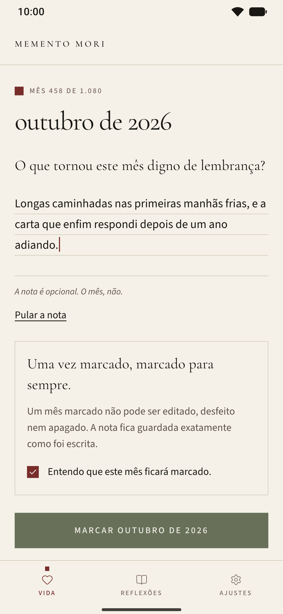
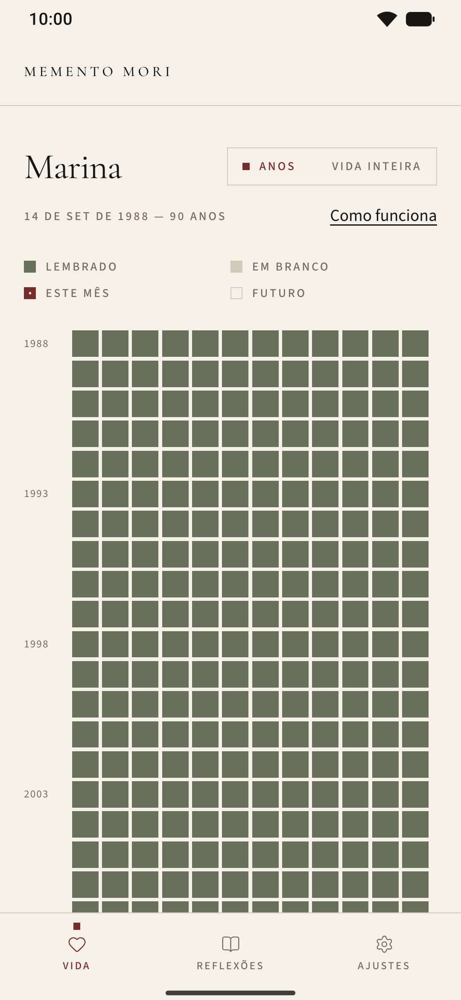
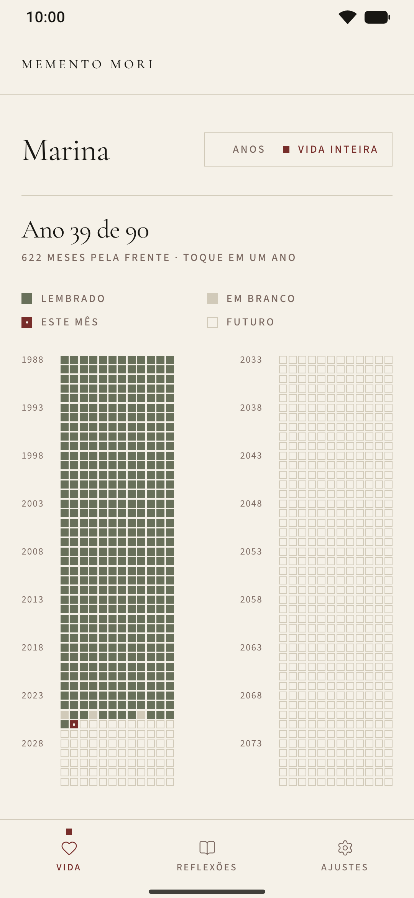
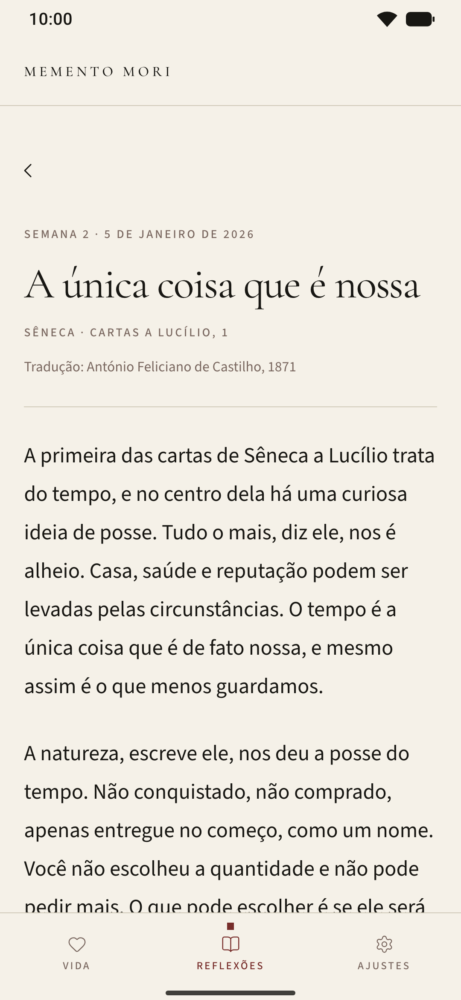
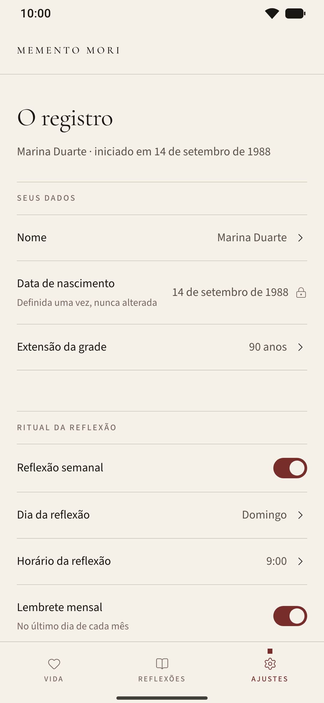
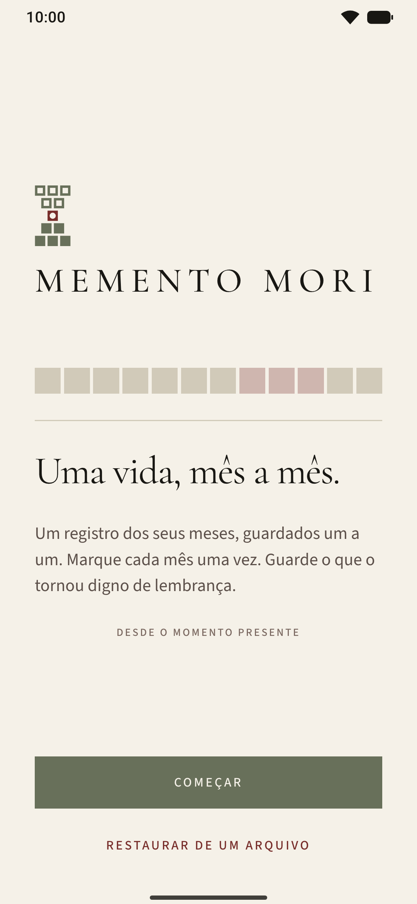

Semana 2
A única coisa que é nossa
“Meu Lucílio, tudo mais é alheio; só o tempo é que é nosso.”
Sêneca · Cartas a Lucílio, 1 · Tradução de António Feliciano de Castilho, 1871
O que tomou as suas horas ultimamente que você não escolheria dar de novo?
Memento Mori
memento mori: um antigo lembrete de que o tempo é finito, para que o presente ganhe foco.
Um registro dos seus meses, guardados um a um. Marque cada mês uma vez. Guarde o que o tornou digno de lembrança.
Para Android 7.0 ou mais recente. Gratuito e sem conta. Em breve no Google Play; a prévia se instala ao lado dele, e o seu registro pode ir junto.

I · Por que “memento mori”
Memento mori quer dizer, em latim, “lembre-se de que você vai morrer”. Pode soar sombria à primeira vista, mas nunca foi feita para assustar. Era um jeito de trazer foco ao presente momento. A ideia é mais antiga que a expressão: Sócrates, no Fédon de Platão, chamou a filosofia de uma preparação para a morte, e os estoicos depois dele fizeram dela um exercício diário.
Sêneca, nas cartas e em Sobre a brevidade da vida, defendeu que a vida é longa o bastante para quem sabe usá-la. Marco Aurélio voltou a esse pensamento muitas vezes no caderno que hoje chamamos de Meditações. Epicteto o ensinava aos alunos sem rodeios:
“Tenha diante dos olhos, todos os dias, a morte, o exílio e tudo o mais que parece terrível, mas sobretudo a morte: assim você jamais pensará em nada mesquinho, nem desejará coisa alguma em excesso.”
O mesmo pensamento seguiu vivo na contemplação cristã, em que o “Ensina-nos a contar os nossos dias” do salmo era lido como um chamado a viver bem o tempo recebido, e nas naturezas-mortas de vanitas do século XVII, que punham uma ampulheta ou uma flor cortada ao lado das coisas boas da mesa. Montaigne deu a um ensaio o título Que filosofar é aprender a morrer, e desejava que a morte o encontrasse “plantando as minhas couves”.
Em tudo isso, o sentido é o mesmo: lembrar que o tempo acaba é um modo de dar valor a ele, não de temê-lo.
Contada em dias, uma vida passa de trinta mil. Contada em meses, noventa anos são 1.080 quadrados: poucos o bastante para caber numa só tela e ser vistos por inteiro. Calendários da vida como “Your Life in Weeks”, de Tim Urban (Wait But Why, 2014), mostraram quanto essa única imagem pode dizer. O Memento Mori a desenha em meses, para que cada quadrado seja grande o suficiente para guardar alguma coisa: uma marca e algumas palavras sobre o que tornou aquele mês digno de lembrança. Como o próprio mês, cada uma é escrita uma única vez.
Salmo 90:12 na tradução de João Ferreira de Almeida, Edição Revista e Corrigida, 1904. Montaigne em tradução nossa.
II · A grade
Uma linha para cada ano, doze quadrados por linha. A grade começa no seu nascimento e termina na extensão que você escolher: noventa anos, a menos que você defina outra.
Cada quadrado é um mês da sua vida. Um deles é sempre o mês que você está vivendo agora.

III · Marcar um mês
Abra o quadrado do mês em que você está e responda a uma única pergunta: o que tornou este mês digno de lembrança?
Guarde uma nota curta ou marque o mês sem ela. A nota é opcional. O mês, não.
Um mês marcado não pode ser editado depois, e é essa a intenção. Marcar pede cuidado: você faz uma pausa, escolhe pelo que este mês deve ser lembrado e escreve uma vez, como um lançamento feito a tinta num livro. Saber que não existe rascunho é o que dá peso a essas poucas palavras.
O que fica é o que você escolheu guardar naquele momento, não uma versão polida depois. Toque no quadrado quando quiser para lê-lo de novo, exatamente como você escreveu.
Uma vez marcado, marcado para sempre.
IV · Duas vistas
O quadro abre nos seus anos, uma linha de cada vez, com o ano atual à vista e uma contagem discreta embaixo: lembrados, em branco, ainda pela frente.
Todos os anos numa só tela, sem rolar, sob uma única linha que diz onde você está, como “Ano 39 de 90”. Faça o gesto de pinça na vista de anos para chegar lá e toque num ano para abri-lo.


V · A reflexão da semana
Cinquenta e três textos curtos, um para cada semana do ano, sobre o tempo, a atenção e a gratidão. Cada um parte de uma passagem, traz uma citação em destaque e termina com uma pergunta para levar pela semana.
As semanas passadas do ano ficam no acervo, em Reflexões.
Semana 2
“Meu Lucílio, tudo mais é alheio; só o tempo é que é nosso.”
Sêneca · Cartas a Lucílio, 1 · Tradução de António Feliciano de Castilho, 1871
O que tomou as suas horas ultimamente que você não escolheria dar de novo?

VI · Lembretes
Se você permitir notificações, o semanal chega no dia e no horário que você escolher, e o mensal no último dia de cada mês, no horário que você escolher. Os dois são agendados no próprio celular, e os dois podem ser desligados em Ajustes.
 Toda semana · seu dia, seu horário
Toda semana · seu dia, seu horário
Alguns minutos para o que dá sentido aos meses.
 Todo mês · o último dia, seu horário
Todo mês · o último dia, seu horário
Marque o que o tornou digno de lembrança.

VII · Privado por princípio
Ele fica no seu celular, e o app nunca o envia a lugar nenhum. Não existe servidor para onde enviá-lo.
Seu registro faz parte do próprio backup do Android, então configurar um celular novo a partir desse backup leva os seus meses junto.
Exportar meu acervo gera um arquivo simples com todos os meses e notas. Guarde-o onde quiser e use Restaurar de um arquivo para trazê-lo de volta.
Apagar este aparelho remove todos os meses e todas as notas de uma vez. Desinstalar o app também os remove.
A política de privacidade completa é curta e diz o mesmo.
VIII · Instalar a prévia
O Memento Mori está a caminho do Google Play. Enquanto isso, uma versão prévia é distribuída como arquivo APK. Ela precisa do Android 7.0 ou mais recente.
.apk.
A prévia é um app à parte (com.gabriel.mementomori.preview), então pode ficar
ao lado da versão do Google Play quando ela chegar. O idioma pode ser mudado depois em
Ajustes.

IX · Perguntas